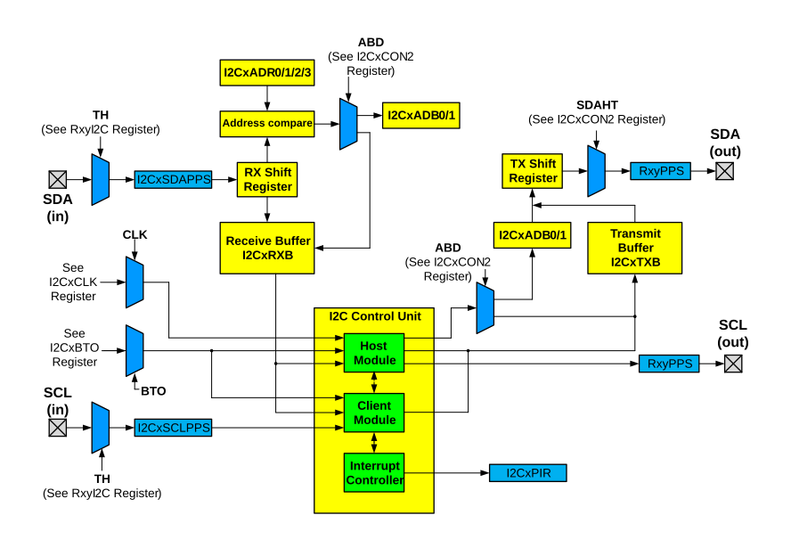

The Inter-Integrated Circuit (I2C) bus is a multi-host serial data communication bus. Devices communicate in a host/client environment where the host devices initiate the communication. A client device is controlled through addressing.
The following figure shows a block diagram of the I2C interface module and shows both Host and Client modes together.
